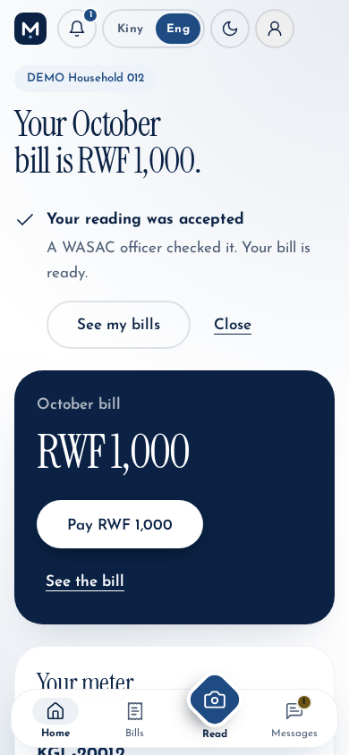
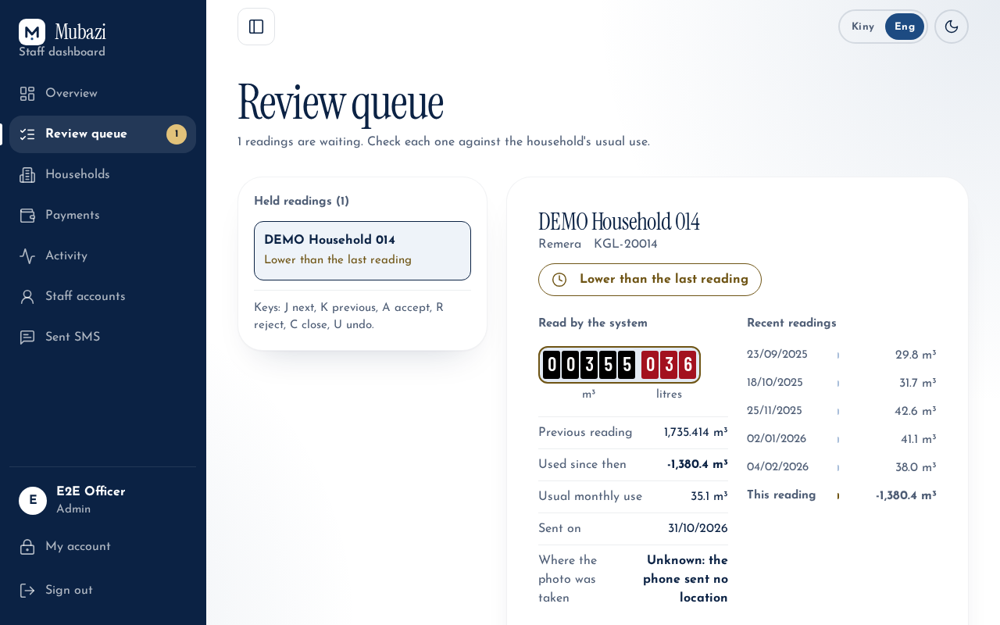
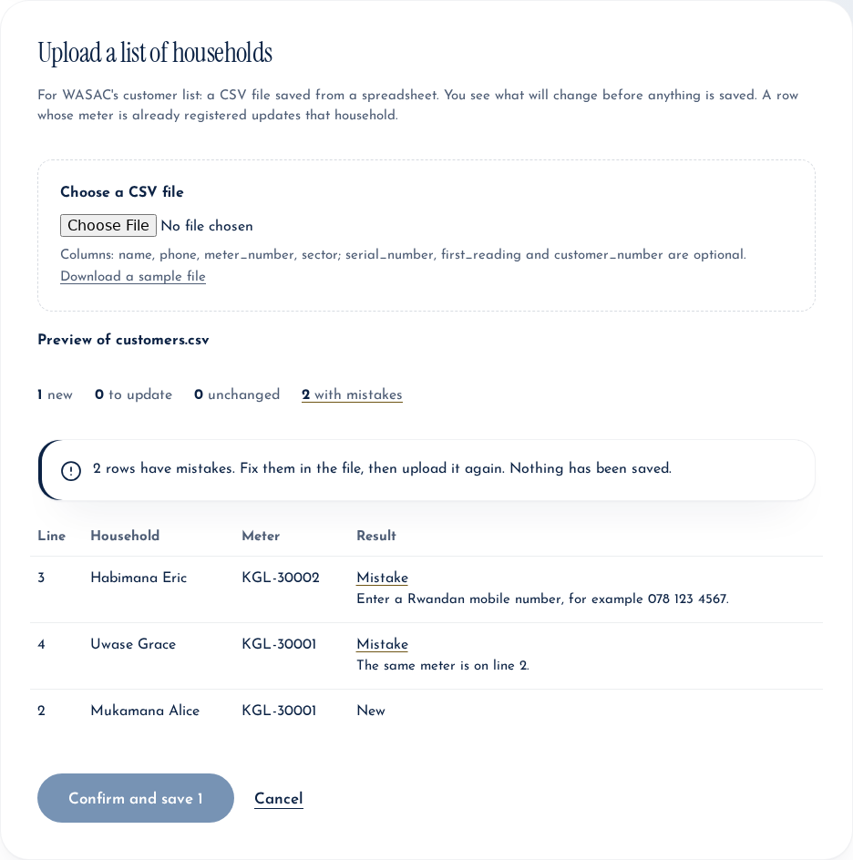
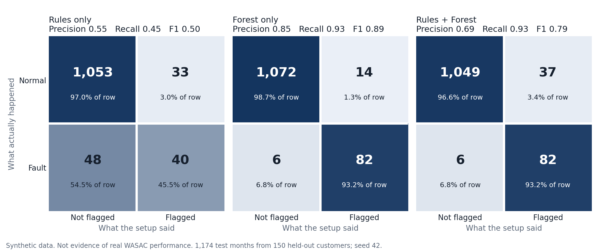

WASAC water meters in Kigali are read by hand, which is slow and leads to estimated bills, misread digits and late discovery of leaks. Mubazi lets a household photograph its meter. Computer vision reads the eight wheels, the household confirms them, the reading is checked against that household's history, and a suspicious reading goes to a WASAC officer before any bill is made. The main objective in the proposal was a prototype that improves the accuracy, traceability and timeliness of readings. Because the reader is right on only 55.7% of unseen photos, the central design decision is that AI assists and people decide.
| Planned feature | Intended purpose | Status | Evidence and justification |
|---|---|---|---|
| Local labelled dataset | Reflect real Kigali conditions | Completed | 652 photos, 536 readable and 98 unreadable verified by eye; notebook |
| React web and mobile camera interface | Let households submit without an app store | Completed | Installable web app, live tips, English and Kinyarwanda; frontend/src/pages |
| FastAPI backend, PostgreSQL records | Traceable digital record of every reading | Completed | backend/app; deployed on Render and Neon |
| MobileNetV2 quality classifier | Catch unreadable photos | Changed | Runs on the server, not the device, and advises instead of blocking: fewer than 100 real unreadable photos, so wrongly blocking a household costs more than a bad photo |
| CRNN reader with CTC | Read the digits | Completed | ResNet18 + BiGRU + CTC was compared with the plain CRNN and selected by a rule set before testing; Section 4 |
| Isolation Forest and rules | Find implausible readings | Partial | Rules run live. The forest was evaluated on simulated data only (section 4) and is not deployed without real histories |
| Tariff bill calculator | Immediate bill estimate | Completed | Versioned tariffs, marked provisional; services/billing.py |
| Officer review queue | Person decides doubtful readings | Completed | Photo, previous reading, changed wheels, location; decisions audited |
| SMS through Africa's Talking | Receipts and alerts | Partial | Built; sandbox only until a live account exists; staff outbox shows messages |
| USSD fallback | Serve basic phones | Partial | Menu built and tested; a live channel needs an Africa's Talking account |
| MTN MoMo sandbox payment | Show the payment step | Completed | API flow tested against a fake MTN. Added MoMo Pay with staff confirmation for use without API keys |
| Three-month pilot, SUS, interviews | Evaluate with 10 to 15 households and 2 to 3 officers | Not implemented | [FILL IN: what happened, and why. Add SUS results if a small test is run.] |
Added beyond the plan: YOLO to find the number window before reading; staff household upload; bill corrections with a second approver and account credit. Direct integration with WASAC's billing database stayed out of scope; customer records are synthetic and marked DEMO-.
Architecture. A React and TypeScript single-page app (Vercel) calls a FastAPI service (Render, Docker) that serves three ONNX models with no PyTorch in the image, and stores data in PostgreSQL (Neon). Files are separated into routes, services, models, schemas, and anomaly and vision packages.
POST /submit-photo runs YOLO, the quality gate and the reader. The household confirms the wheels on an editable counter.POST /check-reading runs the same read-only evaluate_reading as /confirm-reading, so the household learns whether a reading would be billed, held, or refused before it is stored. /confirm-reading repeats every check with the meter row locked.


| Strategy | Why, and how | Results and improvement made |
|---|---|---|
| Unit and integration | Money and rules must be exact. pytest and Vitest run on every push in GitHub Actions | 482 backend passed (4 skipped: need private model files), 225 frontend passed. Coverage 94% backend, 83% of frontend lines |
| Concurrency | Two taps must not charge twice; SQLite cannot show this. Race tests on PostgreSQL 16, with a control that shows the race without the guards | Passed in CI. Led to row locks and partial unique indexes |
| End-to-end | Proves the layers work together. Playwright drives a household and an officer through a real browser | 25 of 25 steps, 0 problems on the merged code run locally. [FILL IN: live site result] |
| Model evaluation | Locked test set of 79 photos from 34 meters, split by meter, used once | 55.7% reading accuracy (95% CI 42 to 69%), 70.9% right or within one digit |
| Performance and stress | Free servers and slow networks. Local load test; deployed timings | Production build on a phone screen: 194 KB, first paint 1.2 s on simulated fast 3G and 3.5 s on slow 3G, both with a 4x slower CPU. Local API: 0 errors at 50 concurrent users, median 143 ms for a bill. Deployed: 1.3 to 3.7 s per photo, about 1 minute after sleep. Peak memory 274 MB |
| Compatibility | Households use many phones. Chromium, Firefox and WebKit engines at four sizes | 36 of 36 page checks passed (Chromium 141, Firefox 142, WebKit 26, 360 to 1366 px): no errors, no sideways scroll. Sizes and slow devices are simulated. [FILL IN: real phone results] |
Simulated anomaly evaluation. No real consumption histories exist, so detection was measured on a seeded simulation of 500 customers over 12 months (backend/simulation/), separate from the live system. Faults filled 5% of active months: leaks at 3 to 5 times normal use and meter bypasses at 0 to 5% of it. The forest trained without labels on 350 customers and was tested on 150 others (1,174 months, 88 of them faults). Intervals come from 2,000 bootstrap resamples of whole customers. These results are synthetic, not evidence of real WASAC performance.
| Setup | Precision (95% CI) | Recall (95% CI) | F1 (95% CI) | F1, mean of 20 other seeds | F1, subtle faults |
|---|---|---|---|---|---|
| Rules only (live) | 0.548 (0.325 to 0.775) | 0.455 (0.271 to 0.640) | 0.497 (0.311 to 0.657) | 0.432 | 0.049 |
| Forest only | 0.854 (0.755 to 0.926) | 0.932 (0.857 to 0.988) | 0.891 (0.820 to 0.945) | 0.884 | 0.667 |
| Rules + Forest | 0.689 (0.526 to 0.843) | 0.932 (0.857 to 0.988) | 0.792 (0.670 to 0.891) | 0.809 | 0.600 |
The forest's F1 was 0.394 higher than the rules' (paired 95% CI 0.251 to 0.566). The rules caught none of the 36 bypass months, because the stuck-meter rule needs a true zero, while the forest caught 32. The rules also flagged 28.8% of normal commercial months, because the 5 m³ a day limit was set for households. These figures show that the method can work and where the rules are weak, not how it would perform in Kigali: the faults were designed by the author, and the forest's 5% contamination setting equals the injected rate, which real data would not reveal. The feature consecutive_unpaid_months was dropped, because one unpaid bill disconnects a simulated customer at once, so it is always 0 in the active months scored.

Different inputs. Tests cover a normal reading, a lower reading, three and ten times usual use, a first reading, meter rollover, repeats within 25 days, the same photo sent twice, wrong sign-in codes, malformed or reused transaction IDs, bad CSV rows, and MTN timeouts, 5xx and 404 answers. Each has an expected response; the table is in docs/testing/README.md.
What testing changed. Review found that an abandoned MoMo Pay attempt blocked bill corrections and held back credit, and that a top-up after a correction looked like a double payment. Each was reproduced with a failing test, then fixed. Testing also found that a meter added with no first reading billed the whole register, that readings at 3 to 10 times usual use were billed, and that blur checks fired more on readable photos, so they were turned off.
PaymentProvider is an abstract class with API, MoMo Pay and simulated versions, so start_payment never branches on a name. PyTorch and ONNX model classes can be swapped behind the same pipeline calls.BillBalance is the single definition of what is owed; dataclasses such as AnomalyResult and Evaluation hold results; each service has its own error class.anomaly is split into scoring (pure), evaluation (read-only) and service (writes). Adding a provider needs a new class, not edits to the payment flow.docs/ALGORITHMS.md.Accuracy is moderate on a small dataset, and the interval is wide. Thresholds and tariffs are provisional. The anomaly model has no real data, and the billing rules in its simulation, including a 20,000 RWF penalty and disconnection after one unpaid bill, are assumptions; SMS and USSD need live accounts, and free hosting is slow after sleep. The Kinyarwanda text awaits review by a native speaker. Next steps are read-only access to WASAC's customer and meter records under a data-sharing agreement that complies with Law No. 058/2021, a real pilot, and retraining on those data.